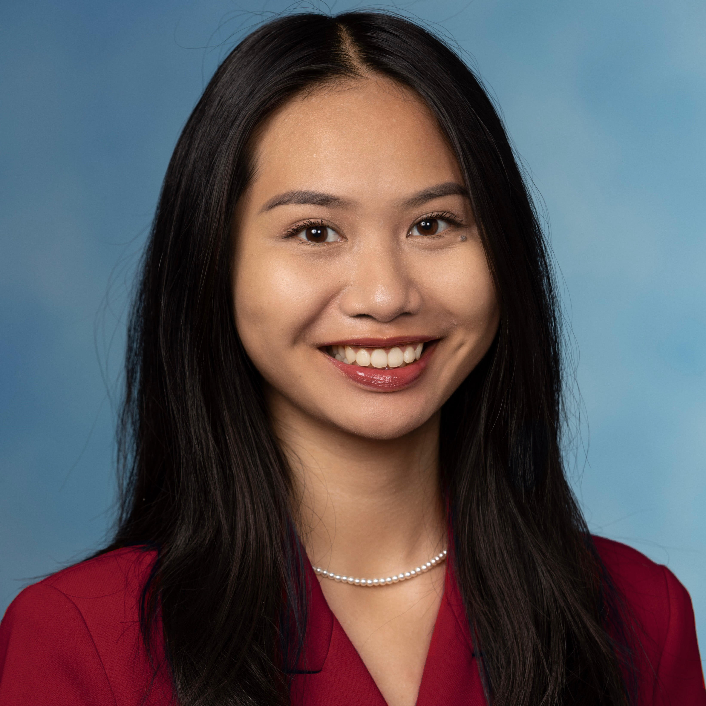

The data informs the method. The method empowers the story.
Dear reader, the biggest takeaway I want you to leave with is that I value combining technical skills with an interdisciplinary context. [two or three paragraphs in your voice: where you studied, what you care about, what you are looking for next. Write it like a letter, not a résumé.]
[Second paragraph.]
Ambitions?
My long-term career goal is to figure out how to utilize my unique skillset in a way that will positively impact the most people. I am looking to pursue roles to contribute to a more environmentally-friendly society or a safer AI-dominant world.
Causes?
Sustainability is the #1 cause that matters to me. I volunteer with environmentally-conscious organizations, such as: Women in Cleantech & Sustainability, Bank.Green, The Good Loop, and Stand Up to Trash. Other causes I get involved in are based on civic concern, such as: justice, economic systems, and politics.
Interests?
Outside of work, you can find me at home doing daily reading and journaling. I love nature and occasionally solo travel to see some incredible scenery, such as the Redwoods or Northern Lights. I am a big fan of fine art, jazz events, electronic & indie music, anything vintage 1920s-1960s, and thrifting. I enjoy all types of food and cafes.